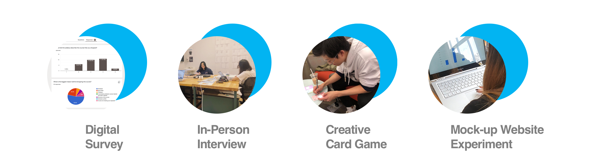

Designed by students for students.
"Hey, no more dropping classes :)"
OnionTalk
4 weeks | 2019
Team
Youie Cho, Charmaine Qiu, Sarah Lee
My Role:
User Research, User Interface Design, Motion Design
Problem Space
Improving Course Selection Experience
Project brief limited our scope to the campus, hence limiting our potential users to college students. My team and I decided to focus on what brought all students together - classes, knowledge. Hence, we decided to do extensive research on the particular experience of course selection.
User Research

Survey
50 Responses told us students mainly dropped classes due to the unmanageable and unexpected workload.

Interview
In-depth interviews told us students are frustrated with the different platforms which are not integrated.

Creative Card Game
Through physical writing down classes on uniquely designed cards, we learned that students knew the importance and usefulness of their classes.
Mock-up Website
Participants' natural, real-time reactions told us they cared the most about average drop rate and average final grade, but participants also expressed they wanted more info.
Synthesize Findings
Affinity Mapping


Synthesize Conclusions
A Need for Personal Experience Sharing
We concluded that essential information of the course should be kept, emotional aspects from past students should be included, the amount of workload and dropout rate should be more visible, and students should feel comfortable communicating about their course experiences.
Case Studies
Glassdoor & RateMyProfessor

Design Intervention
The OnionTalk Application

Name is inspired by tears of taking a class you don't like & the multiple layers of a single experience.
User Flow
UX Design

Sketches
Low-Fidelity Wireframes

Introduce OnionTalk
No more worrying about choosing your classes.
We are here
to share, to learn, and to build a community.


Login + Course Selection
Students log in with their university accounts to ensure they engage politely with other users even though they stay anonymous on all channels.

One Click for All External Sources
Based on our research results, the basic information that students wanted to see were the pre-requisites and reservations, external links and syllabi. Providing an accurate and consistent information to every CMU student allows course selecting to be more visible as students can search about any class offered at CMU.

The Discussion Board
OnionTalk is approachable and understanding to students because of its ability to post, read, and search anonymously.

The anonymity in posting honest feedback in the discussion boards is helpful to students because it gives personal experience about the course, professors, workload and difficulty by the students. The discussion board is written by the students for the students.